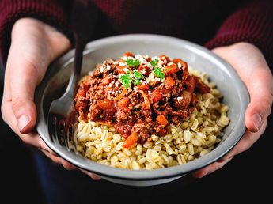
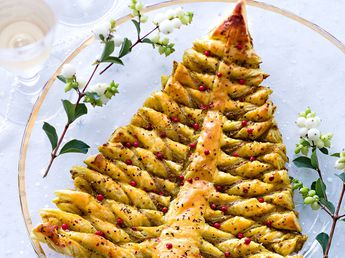

Flan de carrotes et courgettes Prix: 8 Euros
Succés
Blé a la bolognaise Prix: 8 Euros

Sapin feuillete Prix: 8 Euros
Horaires d'ouverture:
Le restaurant est fermé les jours fériés. Pour réserver vos tables, nous vous invitons à nous contacter par téléphone, par mail ou en utilisant le formulaire de contact (rubrique contact) dès 11h le matin et 18h le weekend. Nous ouvrons exceptionnellement sur demande les soirs en semaine pour des groupes. Nous restons à votre écoute et disposition.
Flan de carrotes et courgettes Prix: 8 Euros
Blé a la bolognaise Prix: 8 Euros
Sapin feuillete Prix: 8 Euros
Notre restaurant est ouvert depuis 1987, dans notre petite ville de Billère. Un endroit convivial et chaleureux avec une terasse ombragée. Nous travaillions que des produits frais et issus de producteurs locaux. Nous disposons aussi du cave à vin variée avec des vins de la région.